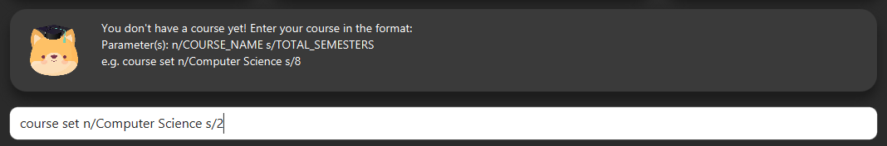
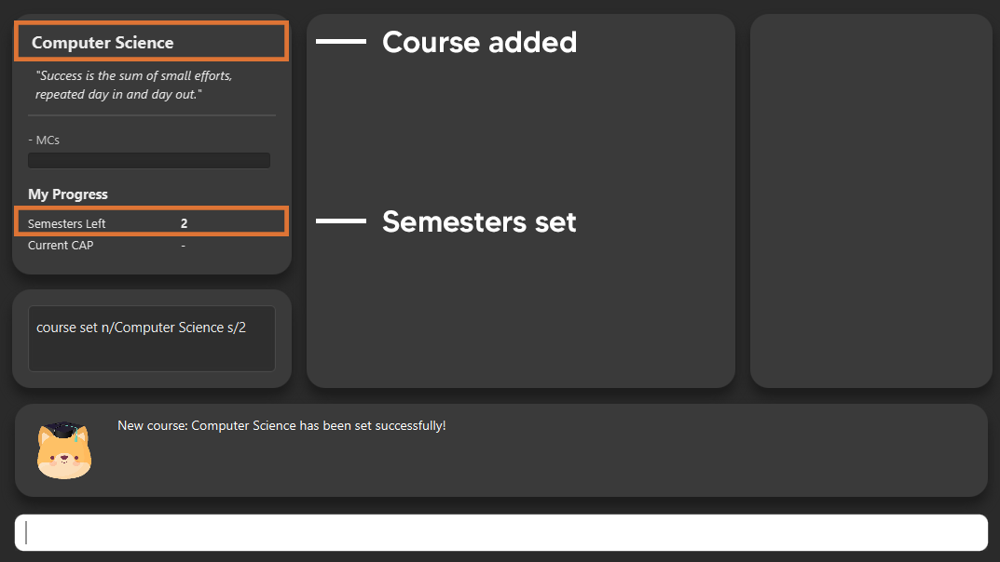
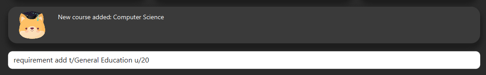
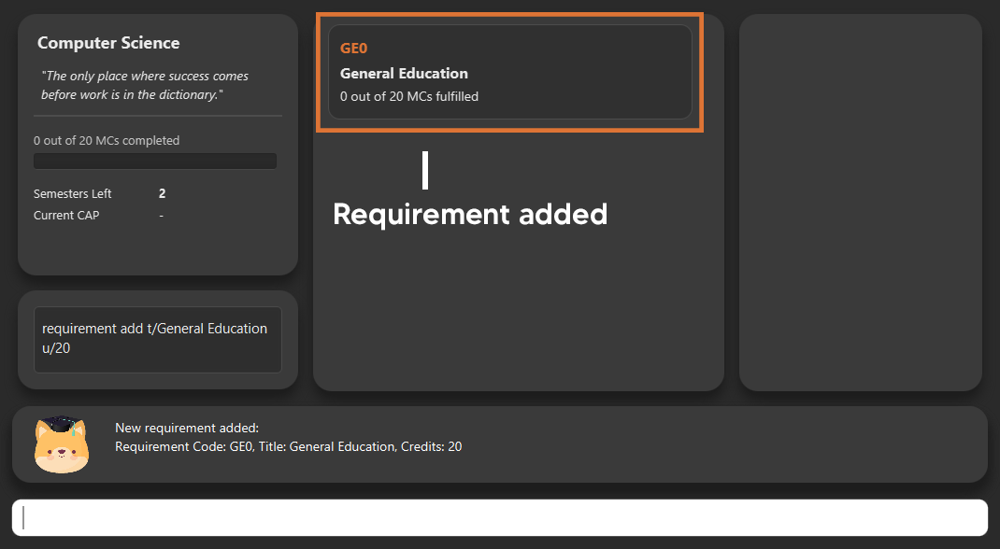
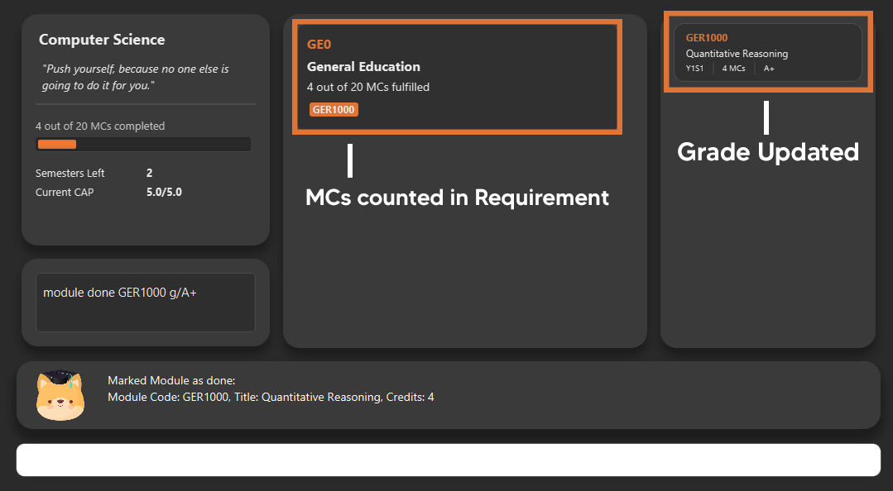
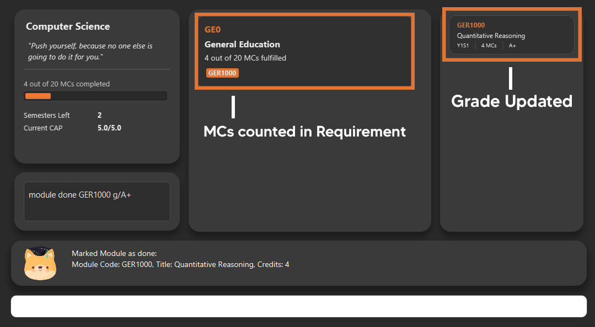
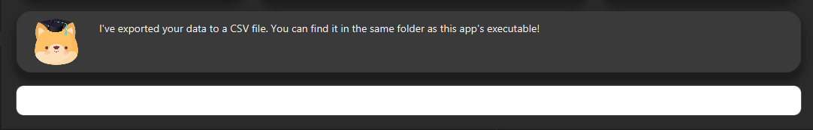
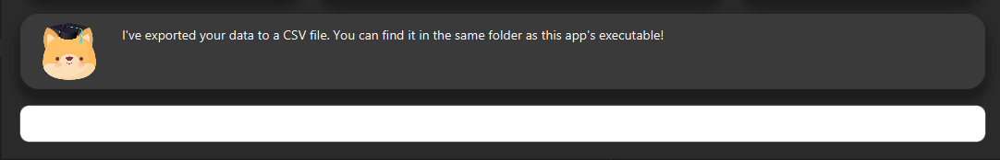

Overview
iGrad is a desktop module management and graduation tracking application. The user interacts with it using a CLI, and it has a GUI created with JavaFX, FXML and CSS.
Summary of contributions
-
Major Enhancement: added feature to calculate C.A.P. to achieve desired C.A.P.
-
What it does: allows the user to get an estimate of what C.A.P. they should expect to maintain per semester to achieve the desired C.A.P. that they want.
-
Justification: This feature allows users to better keep track and aim for better grades. It provides added convenience for users as it uses existing data that user has already input.
-
Highlights: Consideration for unachievable C.A.P. was included
-
-
Major Enhancement: Integrate Semesters tracking under course management feature
-
What it does: tracking of how many semesters a user has left for their course of study, calculated based on total semesters that user has input and completed semesters based on modules completed.
-
Justification: This feature provides convenience to users as it allows the user to know of such information without additional calculations. Therefore, it adds to user experience. This feature is also necessary for the calculation of C.A.P. feature.
-
Highlights: Tracking does not require any additional input by user, and is updated automatically on the UI.
-
Credits: Wayne for integrating backend to frontend functionality
-
-
Minor Enhancement: assisted Nathanael in adding feature of Course editing and deletion in initial phase of project.
-
Code contributed: [All commits][Project Code Dashboard]
-
Contribution to Team Based Tasks:
-
Added personalization to messages that are feedback to user while using the application.
-
Standardized overall messages to be shown to user while using the application.
-
Presented project as part of the product pitch team.
-
Contributions to the User Guide
Given below are the sections I contributed to the User Guide. They showcase my ability to communicate with end-users of the product in question. Worked in conjunction with Daryl. |
Walkthrough
This segment details a simple tutorial on how to use the application. It provides a step-by-step guide on how to utilise the main components of the application, and covers the following:
-
Choosing an
Avatar -
Adding a
Course -
Adding a course
Requirement -
Adding a
Module -
Assigning a
Moduleto aRequirement -
Adding additional details to a
Module -
Marking as
Moduleas done and assigning aGradeto it -
Tracking your academic progress:
MCsandCAP -
Exporting your data
Here is a 10-step guide on how to use iGrad.
Start up the application
Section by: Daryl
-
Open up the application by opening the
iGrad.jarfile. -
Select an avatar by typing its name before pressing enter.
-
The avatar will act as your guide for the application.

Enter your course details
Section by: Daryl
-
Course refers to the name of the course you are currently enrolled in.
-
Enter the name of your course in the format:
course add n/COURSE_NAME s/TOTAL_SEMESTERS -
E.g.
course add n/Computer Science s/2
Key in your graduation requirements
Section by: Daryl
-
Requirements refer to degree requirements needed in the entered course.
-
Enter your course graduation requirements in the format:
requirement add t/REQUIREMENT_TITLE u/MCS_REQUIRED -
E.g.
requirement add n/General Education u/20
Add modules to the tracker
Section by: Daryl
-
Modules refer to modules that you have taken or are planning to take.
-
Enter modules into the system in the format:
module add n/MODULE_CODE t/MODULE_TITLE u/MCs -
E.g.
module add n/GER1000 t/Quantitative Reasoning u/4

Assign your modules
Section by: Daryl
-
Assign modules under their respective requirements.
-
Enter assign in the format:
requirement assign REQUIREMENT_CODE n/MODULE_CODE -
Note: Requirement codes are generated by the system.
-
E.g.
requirement assign GE0 n/GER1000

Key in additional details for your modules
Section by: Teri
-
Edit modules with additional information such as Semester. Other information that has already be input can be edited as well.
-
Enter edit to be done to the module in the format:
module edit MODULE_CODE s/SEMESTER -
Note: For Semester, it has to follow the format of
Y_S_ -
E.g.
module edit GER1000 s/Y1S1

Mark a module as done and assign a grade to it
Section by: Teri
-
A module is considered as done when a grade is assigned to it.
-
Enter grade for the module in the format:
module done MODULE_CODE g/GRADE -
E.g.
module done GER1000 g/A+ 

Track your MCs
Section by: Teri
-
MCs refer to Module Credits.
-
MCs are automatically tracked and updated.
-
Total MCs count is the total of all requirement MCs.
-
MCs are fulfilled when modules that are within a requirement are marked done.

View your CAP
Section by: Teri
-
CAP refers to Cumulative Average Points and is out of 5 (max).
-
CAP is automatically tracked and updated.
-
CAP is updated whenever a module within a requirement is marked done with a grade.

Export your data
Section by: Teri
-
Data of your entire study plan can to exported to a comma-separated values (.csv) file.
-
Export your data in the format:
export -
Note: Data file can be found in the same folder as this application.
 

Contributions to the Developer Guide
Given below are the sections I contributed to the Developer Guide. They showcase my ability to communicate technical information into documentation as well as my contributions to the project. |
Section by: Teri

Semesters stores the total semesters and remaining semesters that a user has in the course.
The following are some noteworthy details on the Semesters class/object:
-
Semestersis first initialized when user does commandcourse set.totalSemesterswill be equal toremainingSemestersas user has not entered any other data to indicate completion of semesters. -
Semestersis updated through methodcomputeSemestersinCourseInfo. -
totalSemestersis changed by user through the commandcourse edit. -
remainingSemestersis computed by methodcomputeRemainingSemesters. This method uses themoduleListto check formodulethat hasSemesterandGrade. Themodulewhich fulfils the mentioned and has the latestSemesterwill be taken as the latest completed semester.
Course Edit
Section by: Teri
Overview
Users can edit their course info, which are Name and Semesters by using the course edit command.
Implementation
Here is how the courseInfo class updates when name and semesters of course is edited.

When a user edits a course, the user has to specify the prefix n/ for Name or s/ prefix
for Semesters.
Then the application proceeds to do the following steps:
-
The
CourseEditCommandParseris called to parse theCourseEditCommandwith then/ands/prefix. -
The
CourseEditCommandis executed and callssetCourseInfotoModel. -
Modelcalls the same methodsetCourseInfotoCourseBook. -
The new course
Nameand courseSemestersis set in theCourseBook.
Course Achieve
Section by: Teri
Overview
Users can get an automatic calculation of their desired C.A.P. by using the course achieve command and
entering their desired Cap.
Implementation
The computation of C.A.P. is done through computeEstimatedCap in courseInfo which uses Semesters
and Cap of courseInfo.
When a user wants to calculate achievable C.A.P., the user has to specify the prefix c/ for Cap.
Then the application proceeds to do the following steps:
-
The
CourseAchieveCommandParseris called to parse theCourseAchieveCommandwith thec/prefix. -
The
CourseAchieveCommandis executed and it calls methodgetCourseInfoinModelto getCourseInfo. -
The
CourseAchieveCommandthen proceeds to call methodcomputeEstimatedCapinCourseInfo. -
The
CourseAchieveCommandthen passes the computed result toCommandResult
The below is a detailed description of what happens inside the Model:
-
After the execute call, the
CourseAchieveCommandcalls methodgetCourseInfoinModel. -
Modelthen calls the same methodgetCourseInfotoCourseBookto retrieveCourseInfo. -
With the
CourseInfoandCap,CourseAchieveCommandcalls methodcomputeEstimatedCapinCourseInfo. -
CourseInfocalls methodgetSemestersandgetCapto itself to get the following information:-
Semesters -
Cap
-
-
computeEstimmatedCapcomputes and returns estimateCap. -
The result is passed back to
CourseAchieveCommand, which passes toCommandResultand eventually returns to the user.
Design Considerations
Invalid and Unachievable C.A.P.
It is possible that a calculated Cap to achieve is not a valid Cap. In such situations, an exception is
thrown within the computeEstimatedCap command and it is caught in the CourseAchieveCommand. User will be
given feedback that the desired C.A.P. is not achievable.
The figure below illustrates this:

Therefore, there are three types of result displayed to User:
-
When User enters invalid Cap to achieve
-
When computed Cap is invalid
-
When computed Cap is valid